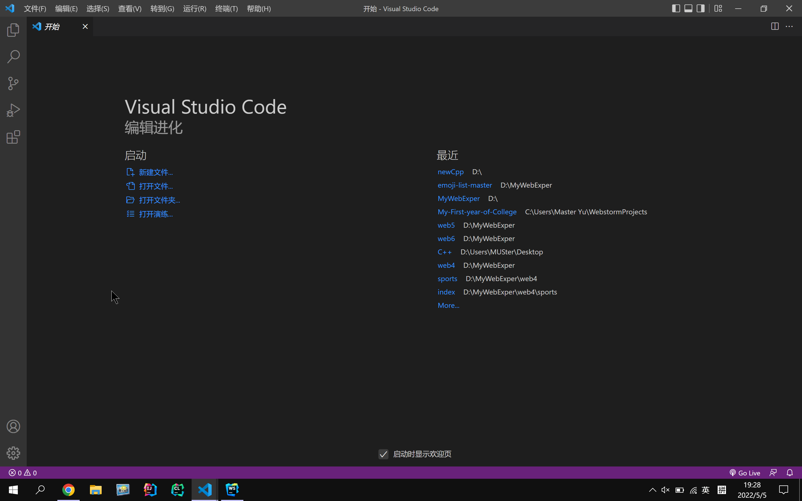
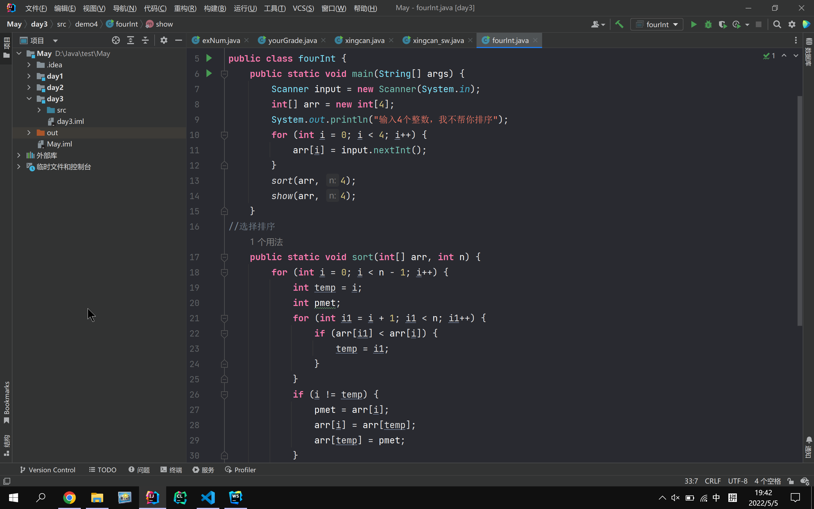
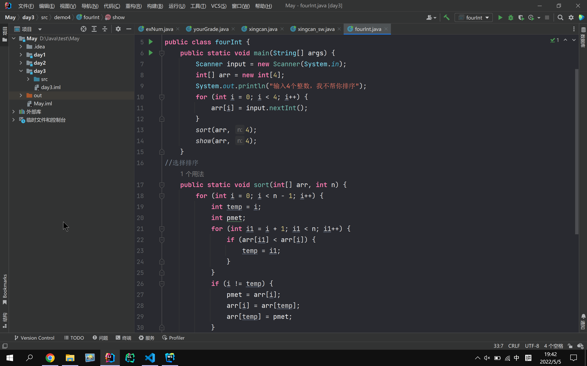

一.珍惜时间
并非开玩笑,因为真的很重要！
来到大学，上学期会感受到时间非常充裕，但这学期就不一样，随着课时的增多，奇怪的作业增多，万恶的周日晚自习，使得我们的个人时间也越来越少。那么我们就需要对时间有一个合理的规划与把控。我分享一下过去的日子里我是如何挤出大把时间的。
1️⃣思考每天必做的事情哪些可以省出时间，我得出的有：
1.吃饭
咱们学校也没什么米其林，所以吃饭完全是可以快点吃的。如果心情不好，那时候再慢点吃，多吃点。吃爽！
2.上课赶路
这点是感知最强的地方。我们每次上课，就像是一场”从南向北的奔赴“，也是我首次来到民大最不适应的地方，上个课跑这么远，这得浪费多少时间啊！所以我推荐能坐交通工具就坐交通工具，节省时间
3.睡觉
我个人认为睡觉是比较浪费时间的，保证充足睡眠就好了，不要贪睡！贪睡使时间浪费！如果不熬夜，睡好后自然醒是完全没问题的。醒来就开始做事，不要赖在床上玩，这不好，人都醒了还在床上是比较迷惑的行为。大好的青春可不能在床上浪费。
2️⃣思考哪些事情可以少做，腾出时间：
1.少看/不看短视频
我自己也不了解为什么短视频会火起来，也没有发现短视频好看在哪里，而且喜欢看忘记时间，这就很得不偿失了。短视频里面也有很多标题党，吸引你进去看，然后看完又没搞清楚他讲了什么，或者发现他是个蹭热度的。评论区里面的人素质水平参差不齐，经常打口水战，有时候我们用户看得很烦。我觉得可以少看一点吧，省出来的时间看看文学作品、写写代码、弹弹琴、玩会电子游戏都香嘛。
3️⃣拒绝拖延：
1.报告类作业。例如实验报告，趁热打铁赶快做完；某某课论文，不拖延，越拖延越难受。所以一定要拿出执行力！
二.获取资源/信息
大学生必须学会的技能
1️⃣多记录关键文件
班级通知群、学院通知群众多，但是重要登记表、重要的通知文件发送的位置都不同，所以建议凡是和自己有关的相关文件，建议备份到云空间或打印纸质保存。
2️⃣好好利用图书馆
图书馆，顾名思义，收纳了很多的图书。不仅文学类作品多，专业类书籍也很多。如果自己选好一本书准备来参阅，先不着急买，首先建议图书馆查找，免费白嫖不亦乐乎。极大改善大学生资金紧张的局面，如果实在是没有，还是老老实实购买原书。
3️⃣多了解现代化工具
在我的学习页面末尾介绍了三个现代化开发工具，其中第一个Vscode适用性广、可用于多语言开发；第二个是大名鼎鼎的IDEA，最受欢迎的Java开发IDE；第三个是现代化的跨平台C/C++
IDE。推荐大家了解一下，打开它就可以感受到现代化的气息，而不是到一股古董的气息，让我们一起来感受一下：

 最智能的Java开发工具：

最智能的Java开发工具：

IDE最好用的地方莫过于快捷键、语法高亮、智能代码补全等等功能，希望大家都能找到最适合自己的开发工具！
4️⃣找到优质学习网站
1.B站，可以看很多课程的视频，也可以拿来放松看鬼畜视频。
2.GitHub，在这里可以看到世界上最牛的程序员写的代码，同时也可以帮你进行源代码管理。
3.刷题网站，力扣、洛谷等
……
进入关于页